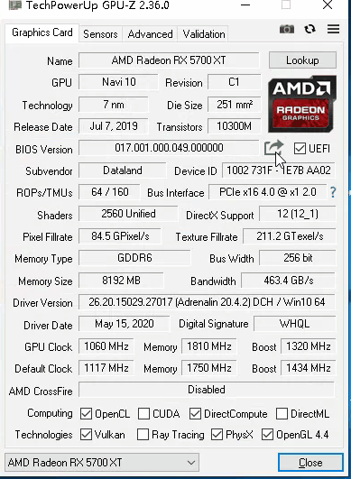
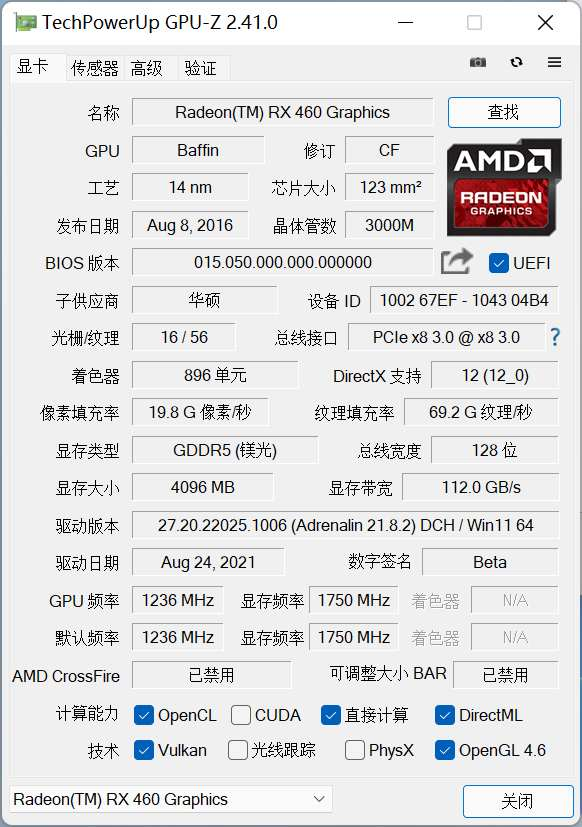
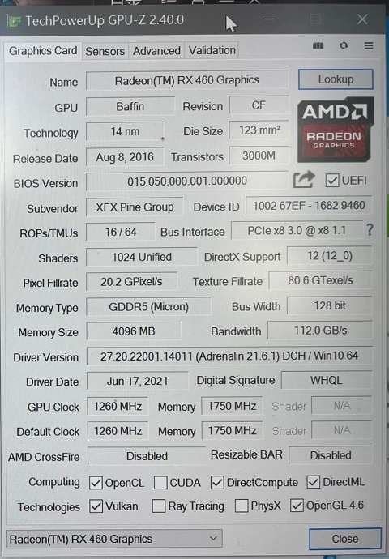
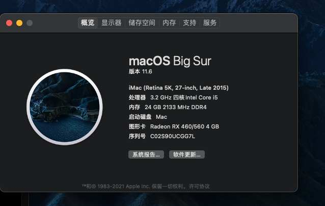

讯景rx460刷bios免驱黑苹果
- 作者:
- 淡白
- 创建时间：
- 2021-09-17 21:39:39
- 黑苹果 amd 显卡 bios
摘要：作者在文章中描述了他升级了黑苹果的显卡，并提到选择了一张讯景的rx460显卡。然而，显卡出现了启动一直读条的问题。通过阅读教程和一些工具，他决定刷BIOS来解决问题。作者列出了刷BIOS的准备工作和操作步骤，并提供了相关工具和资源的下载链接。最后，作者成功地刷入了新的BIOS，并显示新显卡正常工作。文章末尾提供了一些参考链接供读者进一步了解。
升级显卡
原来我的黑苹果使用的是gt730很遗憾的是不支持4k@60所以在前两天入了一张rx460 但是不成想讯景这个牌子的显卡黑果好多都有问题，我的显卡也出现了启动一直读条的问题。起初我以为是efi的问题整了好半天都不行，然后我就想着挂海鲜市场给卖了。不成想今早来了个人说这张卡是可以支持的需要刷BIOS，于是今天我看了一番教程，下班回家后开始了操作。
刷BIOS
注意，刷BIOS有风险。
准备工作
- DDU 可以用来卸载驱动 非必须
- GPU-Z 查看显卡信息
- amdvbflashWin 刷bios工具 最新版我用会出错 2.93最好用
- vgabios 下载
挑选vbios
同阵营、同型号（极个别可以跨型号） gpu核心频率差距不大、内存颗粒一致功耗等等 我刷的是华硕的 bios 最先刷的蓝宝石的结果 LOL 1FPS 技嘉的不是满血，唉~ 不过对我来够用了。
备份
GPU-Z除了查看以外还能备份BIOS  顺便在这保存一下我的备份 备份rx460 bios
刷bios操作
以下命令需cmd管理员身份运行然后进入amdvbflash目录执行
1、解锁BIOS
amdvbflash.exe -unlockrom 0
2、刷入BIOS
amdvbflash -f -p 0 XXXX.rom
注释：XXXX为你下载的VBIOS文件名，也可以将下载好的文件名改成简单的名称即可。
没有err的话重启电脑再用GPU-Z看看是不是已经刷上了。 重启后再看  下面是之前的： 
由于没有找到更合适的bios这张卡频率降了处理单元也少了。
启动mac
成功启动，害我搞了半天efi，显卡识别成功。60fps的流畅👌 
更多详细内容请查看参考